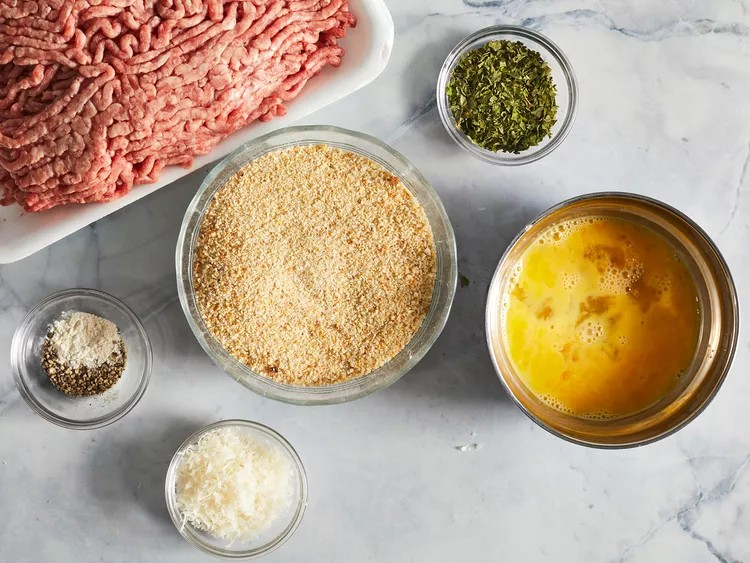
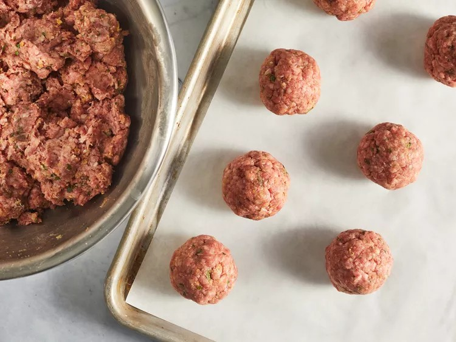
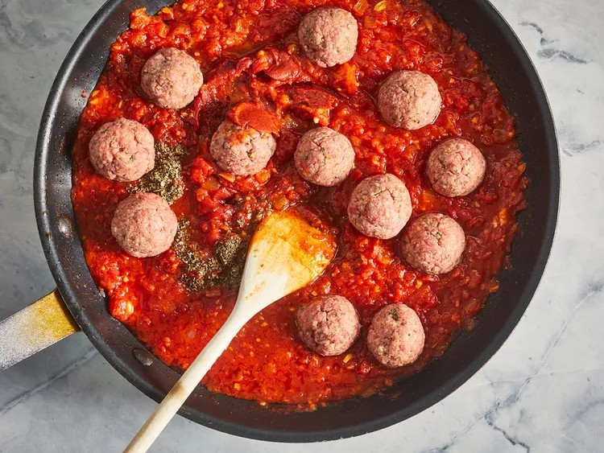
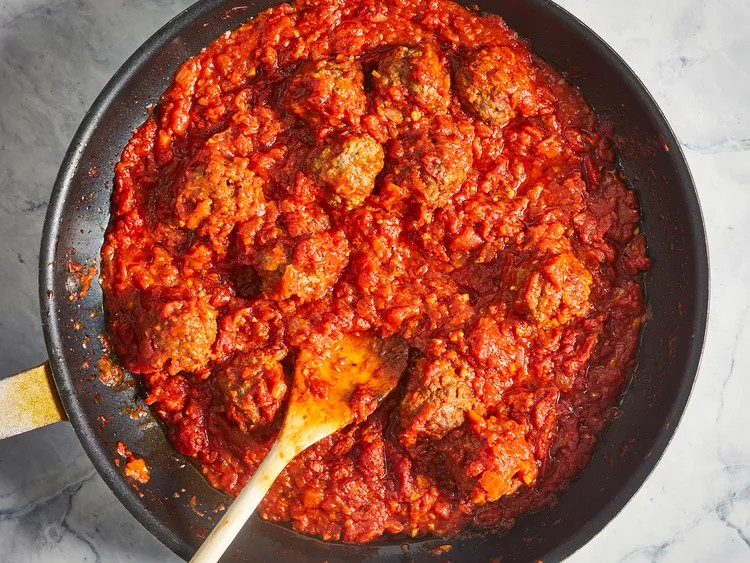

This is an Italian-style pasta sauce with homemade meatballs that's cooked slowly over low heat for an intense tomato flavor. It's easy to make the spaghetti sauce ahead of time; gently reheat and add meatballs 30 minutes before you're ready to serve with your favorite pasta.
| Prep Time: | Cook Time: | Total Time |
| 20 mins | 2 hrs | 2 hrs 20 mins |
| Servings: | Yield: | |
| 6 | 6 servings |
Whether you're looking for a spaghetti sauce with meatballs for your next spaghetti night, a meatball sub, or any other Italian recipe, you have just found the best recipe on the internet. This simple recipe shows you how to make homemade meatballs with a delicious and fresh tomato sauce. We promise you will never go back to store-bought meatballs or spaghetti sauce ever again! We recommend getting a big pot ready because you'll want to double (or triple) this recipe.
You'll find the full step-by-step recipe below, but here's what you can expect from this easy recipe:
Combine ground beef, bread crumbs, parsley, Parmesan, black pepper, garlic powder, and egg in a bowl. Form into meatballs. Store, covered, in the refrigerator until ready to use. While we love this method, some reviewers like to brown the meatballs before adding them to the sauce to lock in the flavor.
In a large saucepan, combine garlic, onion, tomatoes, salt, sugar, and a bay leaf. Simmer those ingredients for 90 minutes.
Add tomato paste, basil, pepper, and the meatballs to the sauce. Simmer for an additional 30 minutes (or until meatballs are cooked).
This recipe makes the perfect, versatile sauce for any Italian-inspired dish. You can serve it over your favorite pasta for an easy dinner. Or you can try one of these mouthwatering recipes.
Store this spaghetti sauce with meatballs in an airtight container in the fridge for three to five days.
Absolutely, and it's actually a great idea! You'll want to brown the meatballs first before freezing them, however. If you make a big batch of sauce, add a few meatballs to zip-top freezer bags and top with sauce. Label the bags and freeze them flat. Sauce will remain fresh for up to three months. You can also freeze the sauce and meatballs separately. Simply ladle the sauce in zip-top freezer bags and freeze them flat. To freeze meatballs, first brown them, then place them on a baking sheet. Freeze the baking sheet for a few hours (or overnight), until the meatballs are solid. Transfer the frozen meatballs to a zip-top freezer bag. Sauce and meatballs will remain fresh for up to three months.
Step 1
Gather all ingredients.
Step 2
In a large bowl, combine ground beef, bread crumbs, parsley, Parmesan, 1/4 teaspoon black pepper, garlic powder and beaten egg. Mix well and form into 12 balls. Store, covered, in refrigerator until needed.
Step 3
In a large saucepan over medium heat, saute onion and garlic in olive oil until onion is translucent.
Step 4
Stir in tomatoes, salt, sugar and bay leaf. Cover, reduce heat to low, and simmer 90 minutes.
Step 5
Stir in tomato paste, basil, 1/2 teaspoon pepper and meatballs and simmer 30 minutes more.
 